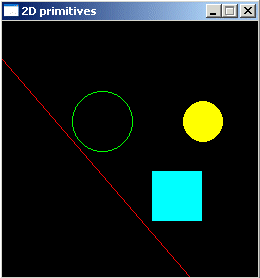
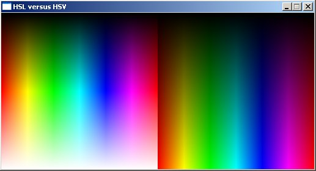
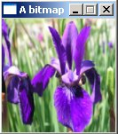
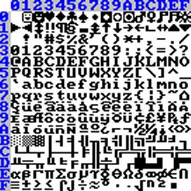
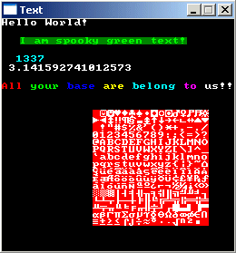
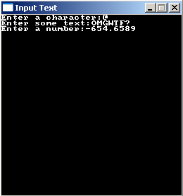

int main(int argc, char *argv[])
{
// Put the code here
}
|
int main(int argc, char *argv[])
{
screen(256, 256, 0, "Small Test Script");
for(int x = 0; x < w; x++)
for(int y = 0; y < h; y++)
{
pset(x, y, ColorRGB(x, y, 128));
}
redraw();
sleep();
}
|

oldTime = time;
waitFrame(oldTime, 0.05); // 50 milliseconds
time = getTime();
|
screen(256, 256, 0, "Done?");
while(!done())
|
int main(int argc, char *argv[])
{
screen(400, 300, 0, "Movable Circle");
float x = w / 2, y = h / 2; //the position of the circle; initially set it to the center of the screen
float time, oldTime; //the time of the current and the previous loop
while(!done())
{
//set the old time to the time of the previous loop
oldTime = time;
waitFrame(oldTime, 0.05);
time = getTime(); //get the time since program start
readKeys(); //get the current keystate
//if an arrow key is pressed, move the circle in its direction at a speed of 50 pixels/second
if(keyDown(SDLK_RIGHT)) x += (time - oldTime) / 20.0;
if(keyDown(SDLK_LEFT)) x -= (time - oldTime) / 20.0;
if(keyDown(SDLK_UP)) y -= (time - oldTime) / 20.0;
if(keyDown(SDLK_DOWN)) y += (time - oldTime) / 20.0;
drawDisk(int(x), int(y), 20, RGB_Gray); //draw a grey circle with radius 20 pixels at the position of the ball
redraw();
cls(); //clear the screen so the old position of the ball becomes black again
}
}
|
int main(int argc, char *argv[])
{
screen(400, 300, 0, "2D primitives");
int x1, y1, x2, y2; //The initial line, too big for the screen
int x3, y3, x4, y4; //Will become the clipped line
x1 = -50; //This is outside the screen!
y1 = -20; //This is outside the screen!
x2 = 1000; //This is outside the screen!
y2 = 1200; //This is outside the screen!
clipLine(x1,y1, x2, y2, x3, y3, x4, y4); //the new line represents the part of the old line that is visible on screen
drawLine(x3, y3, x4, y4, RGB_Red); //The newline is drawn as a red line
drawCircle(100, 100, 30, RGB_Green); //a green unfilled circle
drawDisk(200, 100, 20, RGB_Yellow); //a yellow filled circle
drawRect(150, 150, 200, 200, RGB_Cyan); //acyan square
redraw(); //make it all visible
sleep(); //pause
}
|

int main(int argc, char *argv[])
{
screen(512, 256, 0, "HSL versus HSV");
ColorRGB color;
for(int x = 0; x < 256; x++)
for(int y = 0; y < h; y++)
{
color = HSLtoRGB(ColorHSL(x, 255, y)); //convert the color "hue=x, saturation=255, lightness=y" to RGB
pset(x, y, color); //plot a pixel from the HSL model
color = HSVtoRGB(ColorHSV(x,255, y)); //convert the color "hue=x, saturation=255, value=y" to RGB
pset(x + 256, y, color); //plot a pixel from the HSV model
}
redraw();
sleep();
} |

int main(int argc, char *argv[])
{
std::vector<ColorRGB> image;
unsigned long w, h;
if(loadImage(&image, &w, &h, "filename.png")) return 1;
screen(w, h, 0, "An image");
//draw each pixel of the image
for(int y = 0; y < h; y++)
for(int x = 0; x < w; x++)
{
pset(x, y, image[y * w + x]);
}
redraw();
sleep();
}
|


int main(int argc, char *argv[])
{
screen(256, 256, 0, "Text");
//draw some texts
print("Hello World!");
print("I am spooky green text!", 20, 20, ColorRGB(0, 255, 0), 1, ColorRGB(0, 128, 0));
//draw an integer variable
int number = 1337;
print(number, 16, 40, ColorRGB(0, 255, 255));
//draw a floating point variable
float pi = 3.1415926535897932384626433832795;
print(pi, 0, 8);
//draw every single character of the font
for(int x = 0; x < 16; x++)
for(int y = 0; y < 16; y++)
{
drawLetter(x + 16 * y, 100 + x * 8, 100 + y * 8, ColorRGB(255, 255, 255), 1, ColorRGB(255, 0, 0));
}
//draw multiple texts in a row easily by using the return value
int pos;
pos = print("All", 0, 70, RGB_Red);
pos = print("your", pos / h, pos % h, RGB_Green);
pos = print("base", pos / h, pos % h, RGB_Blue);
pos = print("are", pos / h, pos % h, RGB_Yellow);
pos = print("belong", pos / h, pos % h, RGB_Cyan);
pos = print("to", pos / h, pos % h, RGB_Magenta);
pos = print("us!!", pos / h, pos % h, RGB_White);
redraw();
sleep();
}
|

int main(int
argc, char *argv[])
{
screen(256, 256, 0, "Input Text");
//input a string
std::string someText;
getInputString(someText, "Enter some text:", false, 0, 0);
//input an integer
int someInteger = getInput<int>("Enter an integer:", false, 0, 8);
//input a double
double someDouble = getDouble<double>("Enter a number:", false, 0, 16);
}
|

Uint32 buffer[h][w];
|
drawBuffer(buffer[0]);
|